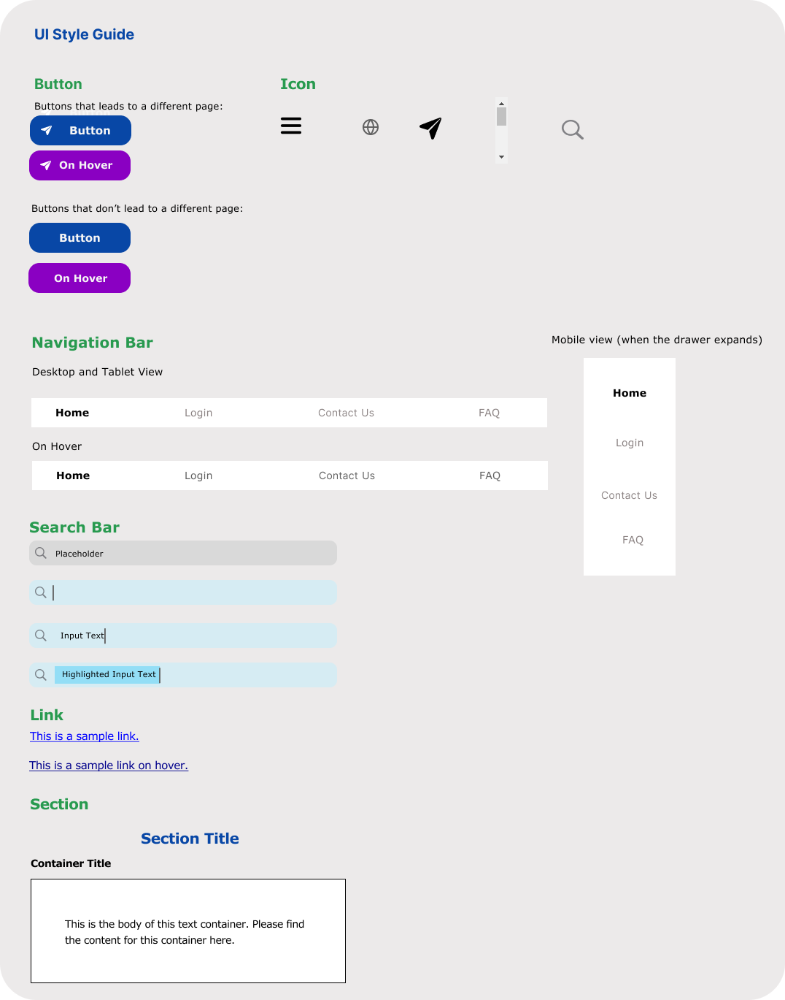

Introduction
Visas are very important for internationals who study and work here in the U.S. For many International students and workers, visa application is often a stressful process.
As an International student, I have applied to U.S. visas several times through this website and encountered many difficulties. I redesigned this website with the goal of making it more efficient and easier to use.
Usability and Accessibility Issues
When the user first accesses the site, they see big blocks of irrelevant information with red background color. The important information and functionality, which are the introduction of the website’s purpose and the create account/log in buttons, are hidden toward the bottom of the page in green, a less obvious color. The user’s attention would be diverted by the irrelevant blocks of information and would have trouble finding where to start. This would decrease the efficiency, learnability and memorability of the website, since new users would have a harder time learning the workflow and returning users would be distracted and forget what they were supposed to do.
-
The information links have a horizontal triangle next to them, which seem to indicate that they're expandable. However, these elements are just links. If the user clicks on the triangle, the webpage has no response.
-
The search bar at the top right seems like a bar to search for content on the current webpage, but instead is a form that leads the user to Microsoft Bing.
-
The red expandable rows at the top do not clearly indicate that they fold and unfold on click. Without actually clicking on these elements, it is hard for the users to understand what they do.
All the texts on the website are tiny and crammed together. These texts increase the number of incorrect inputs and the amount of time it takes to complete typical tasks for the users.
There are many examples of low contrast between the text color and the background color. Some examples include white words on red background and white words on light green background. The low contrast decreases readability and increase the amount of time it takes to complete typical tasks.
There are many big blocks of texts with no clear indication of priority, and no key information is highlighted. This design overloads the user with too much information and makes it harder for them to identify and complete the important tasks.
The search bar at the top right has bad error handling. When the user uses it to search something, they see an error message: “This form is not secure. Autofill has been turned off.” This browser error should be avoided by appropriate error handling on the website itself by implementing a secure version of the search bar. An error message like this would cause confusion and anxiety for the users and should be avoided.
-
According to WAVE, the page has many contrast errors, where the contrast between text and background colors is very low. I do agree with these errors, because I also have trouble reading the large blocks of text.
-
There is an error about missing form label on the search bar. I agree with this error and think that it shows how misguiding the search bar is. It is presented as a search bar with the button “search site” but is actually a form.
-
There are some warnings for very small text, which I also think is a major usability problem of the website. The low contrast and the small text make the readability of the site very low and would decrease the user’s efficiency when navigating the site.
Lo-Fi Prototypes
Click on any sketch to enlarge it and view it in more detail!
Annotations for Low-Fi Prototypes
The buttons for creating an account and logging in and the welcome message are now at the top of the page. The two buttons are also bigger than the original ones. This allows the users to notice the buttons and the message and start the visa application process as soon as they go on the site.
On the original website, the search bar at the top right seems like a bar to search for content on the current webpage, but instead is a form that leads the user to Microsoft Bing. For the redesign, I added the message “Search for information related to this site on Microsoft Bing” to make the purpose of the search bar clearer.
For the mobile version, there is no search button next to the search bar. Instead, when the user clicks on the search box, the keyboard pops up. After they finish typing their input, they can use the “enter” button on the keyboard as the search button.
It’s hard to demonstrate how to address the bad error handling with the search bar in the prototypes. If I were to actually implement the redesign in code, I would implement the search bar such that it redirects to Bing in a more secure way instead of triggering a browser-generated error message.
The text sizes are bigger in the redesign and organized in clear sections instead of being crammed together.
All the information on the redesigned site is organized in sections with clear headings and rectangle containers. For the sections that have many links, such as “Important Links” and “Social Media Page”, I added bullet points for each link to make the list appear more organized. This allows the users to identify the purpose of each section and have an easier time locating information useful to them.
In the redesign, the expandable rows have arrows next to them indicating if they’re folded or unfolded. When a row expands, it is highlighted in green. These visual cues help the users understand that each row folds/unfolds on click.
In the new design, all the links are underlined (and will be blue in the hi-fi prototypes) to indicate that they are links. There are no more arrows next to the links.
Visual Style Guide

High-Fi Prototype
The current page we’re on is bolded. When the user hovers on the other elements (Login, Contact Us, FAQ), the text will be highlighted in grey. Clicking on each element leads the user to that page.
This button is normally blue; on hover, it turns purple.
The search bar has four different states: unclicked, clicked, with input text and highlighted input text
On click, this button opens a new page in Microsoft Bing with the search results. All buttons with the airplane icon lead the users to another page.
Each row in the accordion folds and unfolds on click. When a row in the accordion is selected, it is underlined.
The links are blue underlined and change to a darker blue upon hover.
The scrollbar allows the user to scroll through and view all the links in the flex container. The user can scroll upward and downward. This is to make sure that the users don’t get overwhelmed by a lot of links at once and instead can choose how much they want to see.
For all the large containers, I will be using bootstrap flex containers and cards. This is because the website I chose contains many sections of information, and flex containers organize them clearly in different rows and columns. The responsiveness for different screen sizes can also be easily achieved by adjusting the sizes of these containers and changing the number of containers on each row.
As we go from Desktop to Tablet to Mobile, the font size decreases and the spacing increases slightly to account for the different screen sizes. The relative difference in font (e.g, title vs. body) remains the same.
To make sure that the website is responsive to handle different screen sizes, I use different number of cards (Bootstrap component) on each row for each screen size. Desktop View has 2 or 3 cards on each row; Tablet view has 2 cards; Mobile view has 1 card.
Redesigned Website
Conclusion
Throughout the process of redesigning this website, I gained a better understanding of the common usability issues and how to address them effectively with visual design principles.
In my responsive redesign, there are definitely areas I could improve upon in the future, such as making certain components more responsive and the website more visually engaging.
{kind=link}
{kind=link}
{kind=link}